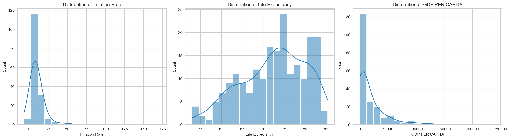
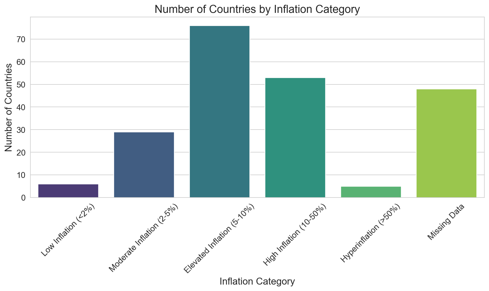
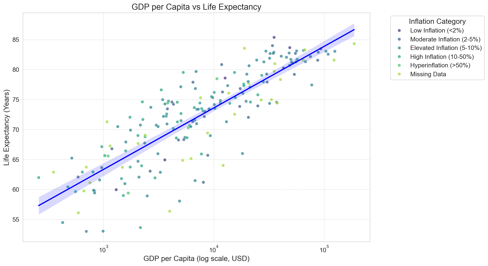

WDI Data Exploratory Analysis
QTM 350 Problem Set 05
Exploratory Analysis
The three indicators I selected for my exploratory analysis of the World Development Indicators dataset:
- Inflation Rate
- Life Expectancy
- GDP per Capita
Key Statistics
| Mean | Standard Deviation | Min | 25th Percentile | Median | 75th Percentile | Max | |
|---|---|---|---|---|---|---|---|
| Inflation Rate (%) | 12.4939 | 19.6824 | -6.68732 | 5.51813 | 7.96757 | 11.6656 | 171.205 |
| Life Expectancy (Years) | 72.4165 | 7.71332 | 52.997 | 66.782 | 73.5146 | 78.475 | 85.377 |
| GDP per Capita (USD) | 20345.7 | 31308.9 | 259.025 | 2570.56 | 7587.59 | 25982.6 | 240862 |
Analysis Summary
Inflation Rate
Across the 217 countries documented in this dataset, inflation rates vary (mean = 12.49%; SD = 19.68%), but a right-skewed distribution (Figure 1) shows that most countries have inflation rates below 15%. The range of values goes from -6.69% (deflation) to 171.2% (hyperinflation).
Some more probing gives a more detailed count of the number of countries within each inflation rate category:
| Inflation Category | Number of Countries |
|---|---|
| Low Inflation (<2%) | 6 |
| Moderate Inflation (2-5%) | 29 |
| Elevated Inflation (5-10%) | 76 |
| High Inflation (10-50%) | 53 |
| Hyperinflation (>50%) | 5 |
| Missing Data | 48 |
As in the table above, we see in Figure 2 that the “Elevated Inflation” category has the highest number of countries.

Life Expectancy
Ther average life expectancy in our dataset is 72.4 years (SD = 7.7 years), and the range runs from 53 years to 85.4 years. A slightly-left skewed distribution (Figure 1) that more measured countries maintain higher life expectancy values, clustering around 70-80 years.
GDP per Capita
The distribution (Figure 1) of GDP per Capita, typically a measure of economic prosperity, is notably right-skewed, indicating that most countries in the dataset have lower GDP, while a few wealthier countries raise the mean ($20,345). The standard deviation for these values is high at $31,309.

Analysis of the relationship between life expectancy and GDP per capita reveals a positive correlation between the two variables (Figure 3).
Similar relationships have been observed in various studies, clarifying the relationship between economic development and health outcomes. One study found that with increases in GDP per capita, life expectancy at birth increased and infant mortality rates lowered (a stronger relationship occuring in countries with lower levels of income inequality) (Miladinov 2020). A 2005-2015 cross-sectional analysis focused on the relationship between GDP and life expectancy in Russia, also showed a positive relationship between the two variables (Shkolnikov et al. 2019).
These articles emphasize that economic development promotes better health outocomes through improved living conditions, healthcare access, and quality of life.
````
References
Miladinov, Goran. 2020. “Socioeconomic Development and Life Expectancy Relationship: Evidence from the EU Accession Candidate Countries.” Genus. Springer.
Shkolnikov, Vladimir M, Evgeny M Andreev, Rustam Tursun-Zade, and David A Leon. 2019. “Patterns in the Relationship Between Life Expectancy and Gross Domestic Product in Russia in 2005–15: A Cross-Sectional Analysis.” The Lancet Public Health. Elsevier.